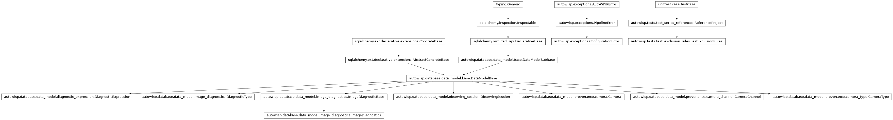
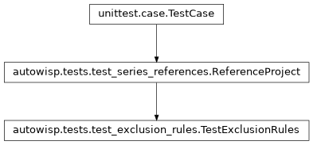

autowisp.tests.test_exclusion_rules module
Class Inheritance Diagram

Tests for deciding which observations an exclusion rule leaves out.
The fixture is the one of test_series_references, a night fit against
two references with a frame bound differently in its two channels and one
bound to nothing, with what a rule needs added: the camera and its channels,
a background in the second channel, a library, and a second night. The
second night is fit against ref1 too, and is far brighter in everything,
so a rule comparing to an aggregate decides differently if the nights are
pooled.
- class autowisp.tests.test_exclusion_rules.TestExclusionRules(methodName='runTest')[source]
Bases:
ReferenceProject
What a rule excludes among observations fit together.
- classmethod _add_cameras(db_session, channels, num_cameras)[source]
Add a camera type with the given channels, and cameras of it.
- excluded(rule, members=None, **kwargs)[source]
Return what rule excludes among members, by default all.
- classmethod setUpClass()[source]
Hook method for setting up class fixture before running tests in the class.
- test_a_channel_the_camera_lacks_is_refused()[source]
Also where only an expression the rule uses quotes it.
- test_a_magfit_read_is_judged_within_its_reference()[source]
Each reference of each night is a population of its own.
The frame bound to nothing is in none of them, and is kept.
- test_a_photometry_not_extracted_is_refused()[source]
It would read as not recorded, and keep every image.
- test_a_photometry_slot_decides_each_photometry()[source]
Every one recorded is listed, with what is excluded in it.
- test_a_preview_decides_in_the_channel_and_photometry_chosen()[source]
Each choice gives its own verdict, as the engine’s would be.
- test_a_preview_needs_each_slot_bound()[source]
A rule deciding per channel or photometry is told which.
- test_a_quoted_magfit_channel_is_split_by_its_reference()[source]
Although the rule binds no channel to hold the reference.
- test_a_slot_decides_each_channel_within_its_night()[source]
Above the median of its own night and channel, not of them all.
- test_cameras_lacking_a_channel_are_counted()[source]
Per name some camera lacks, counting cameras rather than types.
Beside the fixture’s camera with
RandB, two cameras withRandG0, and a type definingXthat no camera is of. Added in this test’s session alone and rolled back, so the other tests never see them.
- test_excluded_images_are_not_offered_as_photref()[source]
Unless the rule decides nothing, or excludes every image.
An image excluded in another channel than its entry’s is offered.
- test_excluding_most_of_a_fit_is_a_warning()[source]
The fraction is reported either way, conspicuously if large.
- test_more_than_half_excluded_is_conspicuous()[source]
Per photometry, of all fit together; exactly half is not more.
- test_quoted_channels_decide_for_every_channel_fit()[source]
One verdict per image, applied to those of its channels fit.